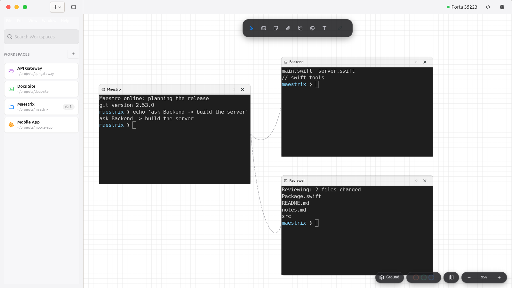

Open preferences with Ctrl+, or the gear in the header. Changes apply immediately and are saved to ~/.open-maestri/preferences.json.
Interface theme#
Preferences → General → Interface theme
| Theme | Description |
|---|---|
| Dark · Maestrix | Navy ground with the palette of the app icon: blue #168bf1 to purple #9354e8 gradient for selections and primary actions, cyan #71dcec for focus and the active tool. The canvas background and grid are dark too. |
| Light | The base theme. |

The terminal colour theme is a separate setting, so you can keep, for instance, a light terminal on the dark interface.
Preferences#
| Tab | Setting | Values |
|---|---|---|
| General | Language | English, 简体中文 (applies on restart) |
| General | Canvas background | Dot grid, Solid, Transparent |
| General | Preferred IDE | Cursor, VS Code, Xcode |
| General | Autosave interval | 5 to 600 seconds (default 30) |
| General | Snap to alignment guides | On / off |
| General | Interface theme | Light, Dark · Maestrix |
| General | Remote SSH | Enable, tunnel port (7433), script path |
| Terminal | Font family and size | Any monospace font, 8 to 32 pt |
| Terminal | Colour theme | system, dark, light, Dracula, Solarized dark/light, Nord, One Dark, Tokyo Night (and Day), Catppuccin (Mocha, Macchiato, Latte), Gruvbox dark/light, Rosé Pine |
| Terminal | Scrollback memory limit | On / off |
| Agents | Presets | Name, command, icon, colour and agent type |
Keyboard shortcuts#
Workspaces
| Action | Keys |
|---|---|
| Next / previous workspace | Ctrl+↓ / Ctrl+↑ |
| New workspace | Ctrl+Shift+N |
Elements
| Action | Keys |
|---|---|
| Center the selected node | \ |
| Start a connection | L |
| Delete the selected node | Ctrl+W or Delete |
| Jump to terminal 1 to 9 | Ctrl+1 … 9 |
Canvas
| Action | Keys |
|---|---|
| Select tool / Terminal tool / Browser tool | V / T / P |
| Zoom in / out / reset | Ctrl+= / Ctrl+- / Ctrl+0 |
| Zoom with the wheel | Ctrl+scroll |
| Snap to alignment guides | Ctrl+; |
| Copy / paste element | Ctrl+C / Ctrl+V |
Terminal
| Action | Keys |
|---|---|
| Copy / paste | Ctrl+Shift+C / V |
| Select all | Ctrl+Shift+A |
| Find | Ctrl+Shift+F |
App
| Action | Keys |
|---|---|
| New terminal | Ctrl+N |
| Save | Ctrl+S |
| Open in editor | Ctrl+Shift+E |
| Toggle sidebar | Ctrl+B |
| Open settings | Ctrl+, |
| Quit | Ctrl+Q |